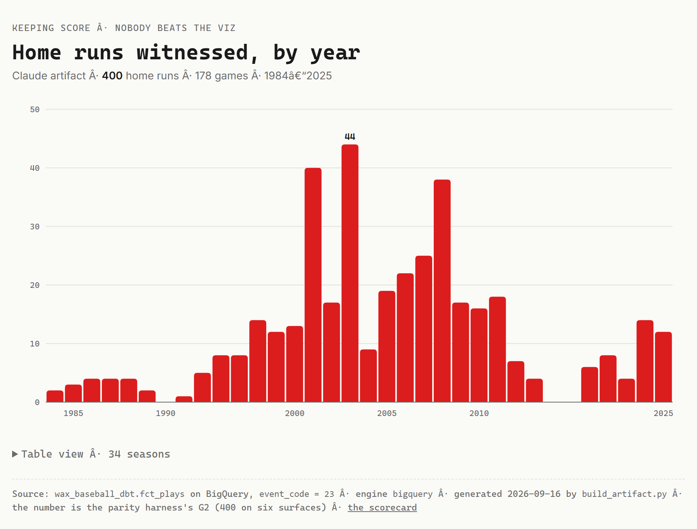

One number, six agents. What does each trace hide?
Every vendor you've heard from this year has an agent that will answer a question about your data. I asked six of them the same one. How many home runs have I witnessed in person? Every one said 400, and every one was right. Then I opened each trace and scored it against the same five columns: did it show its plan, its tool or SQL, its grounding source, its tokens and latency, and how you get the trace at all. No surface cleared all five. Each one hides something different, and what it hides is what you'll be QA'ing blind.
The game. [GAME — Wax picks. Suggestion: 2022-07-30, the last game Al and I saw together. The Claude agent's one action in this inning was a reminder to him about it, staged as a draft with no recipient and never sent. I'm the send button.]

Measured September 3 to 5, 2026, one question, one run each, from the trace each platform actually produces. Not a benchmark. A vendor may have closed its gap since.
| Agent | Shows its plan? | Shows the query? | Names its grounding? | Tokens & time? |
|---|---|---|---|---|
| Agentforce | A 21-step sequence, no stated reason | The action and its input, not the SQL underneath | Absent. Provable only from the Apex source | Latency per step. Zero token fields in 85 KB |
| Claude SDK | Tool sequence, thinking billed but not surfaced | The metric name; there is no SQL by design | In the tool's own text: the governed catalog | Both, fully. $0.18, 5.7 s of model in 38.7 s |
| BigQuery | Plain sentences, the plainest of the six | SQL verbatim, twice | The table and the BigQuery job id | 9.5 s; 0 bytes billed, a cache hit |
| Databricks Genie | Four typed thoughts; states its own assumption | MEASURE(home_runs_witnessed) by name | Named and self-qualified | 17.9 s; model called twice per turn |
| Snowflake Cortex | A status ladder; thinks aloud when it fails | SQL, and the first attempt failed in the open | The semantic view, then re-derived by hand | Richest platform log: 12 rows, per-step tokens |
| Tableau Agent | No reasoning text | The structured semantic query, verbatim | Named: the semantic model, on every answer | 9.1 s; zero token fields |
The 3rd inning's confident zero was diagnosable only because Tableau Agent shows the query. The 4th inning's 9 was diagnosable only because Agentforce writes tool_invocations: null to a file. Genie was the one agent that volunteered a caveat. Cortex was the one that walked past the definition it was handed and rebuilt it. BigQuery narrated in English and gave a job id you can look up. Each surface's strength is another's blind spot.
The Claude agent has no SQL tool. Its whole world is list the metrics, query a metric by name, draft an email. Asked about home runs and the Yankees' win rate, it listed the metrics, asked for two by name, done: 4 tool calls. A twin with a raw read-only SQL tool instead spelunked the schema, rediscovered that a home run is event code 23, found the team-grain table, and got the same right answers in 9. Honest reading: good modeling narrows the gap, because the marts are clean. The governed path still answered in under half the moves with zero rediscovery, and the metric name is right there in the trace. A smaller model got 400 through the same path too, after fumbling seven tool-loading calls first. Correctness survived the small model.
Then the clock. That one turn cost $0.18 and took 38.7 seconds. The model's share was 5.7 seconds. 21.7 seconds was the local metric engine starting up. The bottleneck was not the model, and if you'd only had the chat window you'd have blamed it.
One more from the same family, from the 4th inning's agent: an action returned 22 venue groups and the prose said “21 different stadiums.” Grounded, and miscounted. The tool did its job; the sentence didn't. That's a column the rubric doesn't have yet.
The closer. Why do people like us keep score? 9th inning →